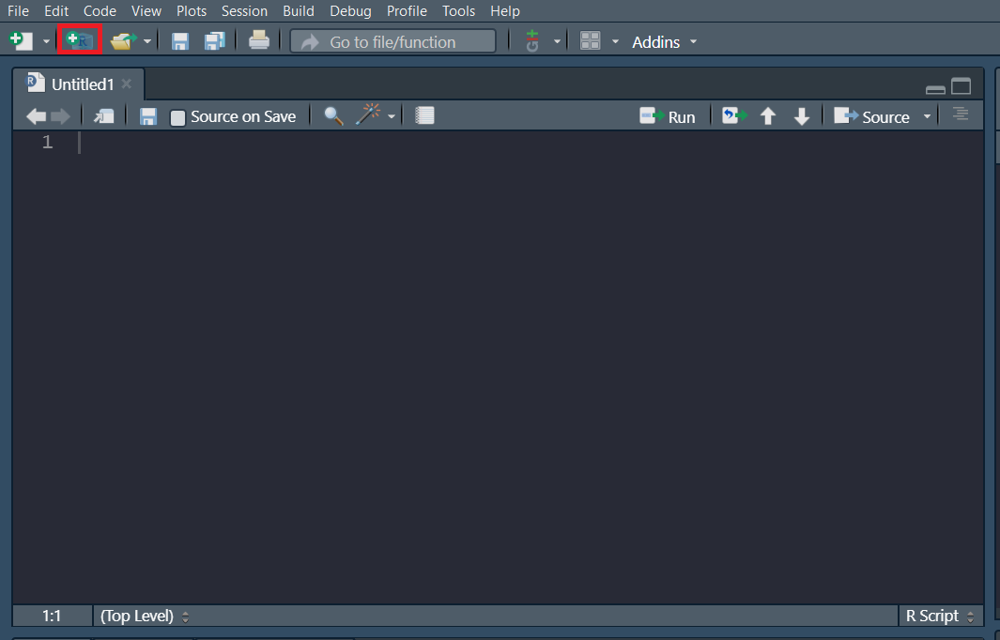
20 R Shiny
R Shiny is a tool used to develop web applications and is commonly deployed in the use of creating dashboards, hosting static reports, and custom tooling.
20.1 Quickstart
Let’s create a new project containing a shiny application. Projects allow you to bundle multiple files into a a single workspace. You can create a new project via the “Create a new project” button towards the top left corner in RStudio.
Since we are starting this project from scratch, let’s choose the “New Directory” option.
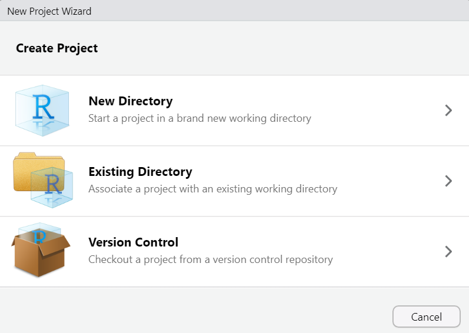
Now you can see there are many types of projects that you can create (not just Shiny Applications). However, we are going to choose “Shiny Application” for this example.
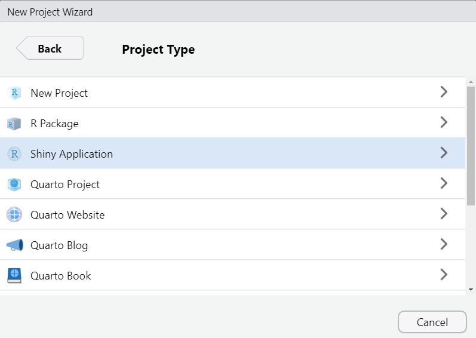
This is going to create a new folder containing your project files. Choose what you would like to name that folder and where you would like for it to be saved.
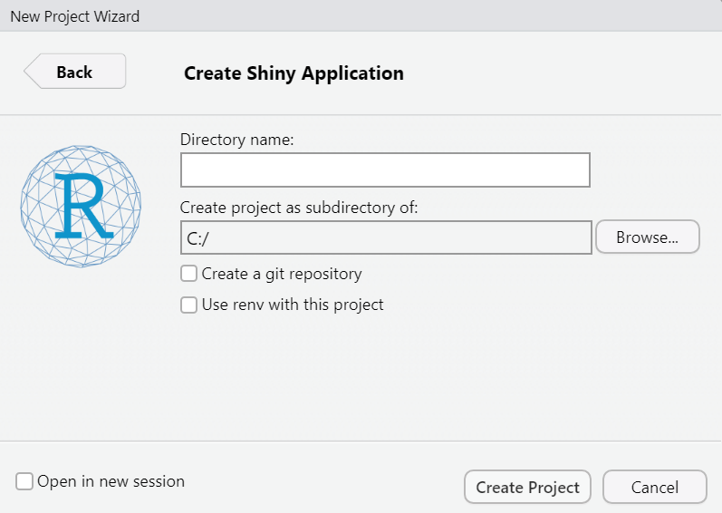
If you’re working in RStudio, you should now have a sample application in your source pane. We’ll go more in depth into what all of this means later.
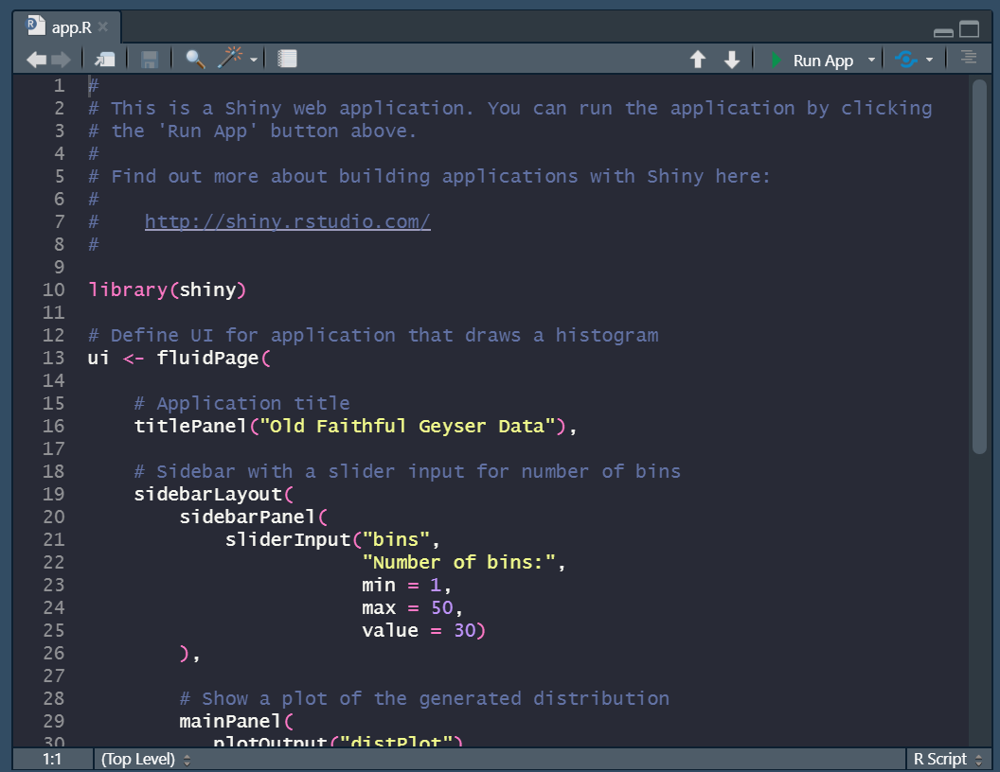
For now, let’s demo what this app looks like by pressing the “Run App” button towards the top right corner of your source pane. You should see a screen pop up that looks like this.
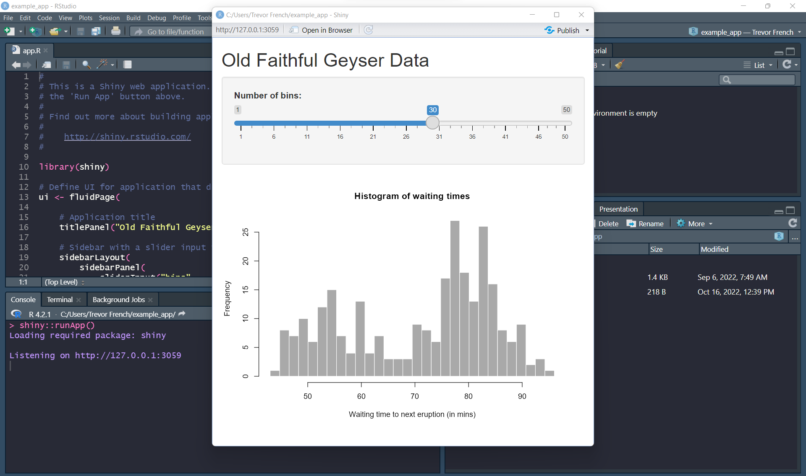
We can see that the application is using the faithful dataset to create a histogram which accepts user input to dynamically adjust the number of bins presented in the histogram.
20.2 Basic Components of a Shiny Application
Shiny applications consist of two main components: a server function and a UI object. The server function will handle any logic you need to put into your application while the UI object will create a user interface. Additionally, you will need to include the “shiny” library and any other libraries that you use in your code. Let’s break down everything that is happening in this sample application
20.2.1 Libraries
One library you will always need to include in your shiny applications is the “shiny” library. Make sure you include any other libraries you plan on using in your code.
library(shiny)20.2.2 UI
The next thing we see in our code is the creation of our UI object. This is where the application layout is created. The first function is the “fluidPage” function. This is probably one of the most common ways to create user interfaces in shiny applications. Layouts created with the fluid page methodology are organized into rows and columns and scale to fit varying browser sizes.
The “titlePanel” function creates a panel with your title inside of it. In our case, this function is responsible for “Old Faithful Geyser Data” being displayed at the top of the page.
Next, we see the “sidebarLayout” function. This is essentially a pre-constructed layout which consists of a “sidebar” panel and a “main” panel which are created using the “sidebarPanel” and “mainPanel” functions, respectively. You’ll notice that our sidebar is actually located above our main panel rather than to the side. This is just because the size of our browser was small enough that they collapsed to be stacked on top of each other. If you increase the size of your browser, you will see the sidebar return to it’s original location.
Inside of the “sidebarPanel” function, we have a function called “sliderInput”. The “sliderInput” function creates the component which allows the user to select the number of bins in our app. We can see this function gives the component the name “bins”, the title “Number of Bins”, a minimum input of “1”, a maximum value of “50”, and a default value of “30”.
The last component of our UI object is the “mainPanel” function. This main panel designates the section where our output plot will ultimately go as can be observed by the “plotOutput” function nested inside of it. This “plotOutput” function is given the name “distPlot”. This is done so that it can be referenced later in our server function.
ui <- fluidPage(
# Application title
titlePanel("Old Faithful Geyser Data"),
# Sidebar with a slider input for number of bins
sidebarLayout(
sidebarPanel(
sliderInput("bins",
"Number of bins:",
min = 1,
max = 50,
value = 30)
),
# Show a plot of the generated distribution
mainPanel(
plotOutput("distPlot")
)
)
)20.2.3 Server
After we create the UI object, we’ll need to create our server function. We’ll pass two arguments into the function: “input” and “output”. The input argument allows us to access data from the user interface while the output argument allows us to pass data back to the user interface.
Inside the function, we reference the “distPlot” component of the UI by typing “output$distPlot”. After this, we pass a plot to the UI with the “renderPlot” function.
Note
The UI can only accept the plot we are going to send it because it is using the “plotOutput” function. If you were going to send a different form of data, the UI would need to have the corresponding function in order to accept it.
For example, if your server was going to send a table to the UI your server would need to use the “renderTable” function and your UI would need to use the “tableOutput” function.
server <- function(input, output) {
output$distPlot <- renderPlot({
# generate bins based on input$bins from ui.R
x <- faithful[, 2]
bins <- seq(min(x), max(x), length.out = input$bins + 1)
# draw the histogram with the specified number of bins
hist(x, breaks = bins, col = 'darkgray', border = 'white',
xlab = 'Waiting time to next eruption (in mins)',
main = 'Histogram of waiting times')
})
}20.2.4 Putting it Together
Finally, you will combine your server and your UI and actually run your app with the “shinyApp” function.
shinyApp(ui = ui, server = server)20.3 Deploying Application
Now that you’ve built an application, you can actually deploy it for the whole world to see. There are many ways to do this; however, probably the easiest way to get started is to create a free account with ShinyApps.io.
20.3.1 ShinyApps.io
Navigate to https://www.shinyapps.io/, select the “Sign Up” button and follow the steps to create a free account.
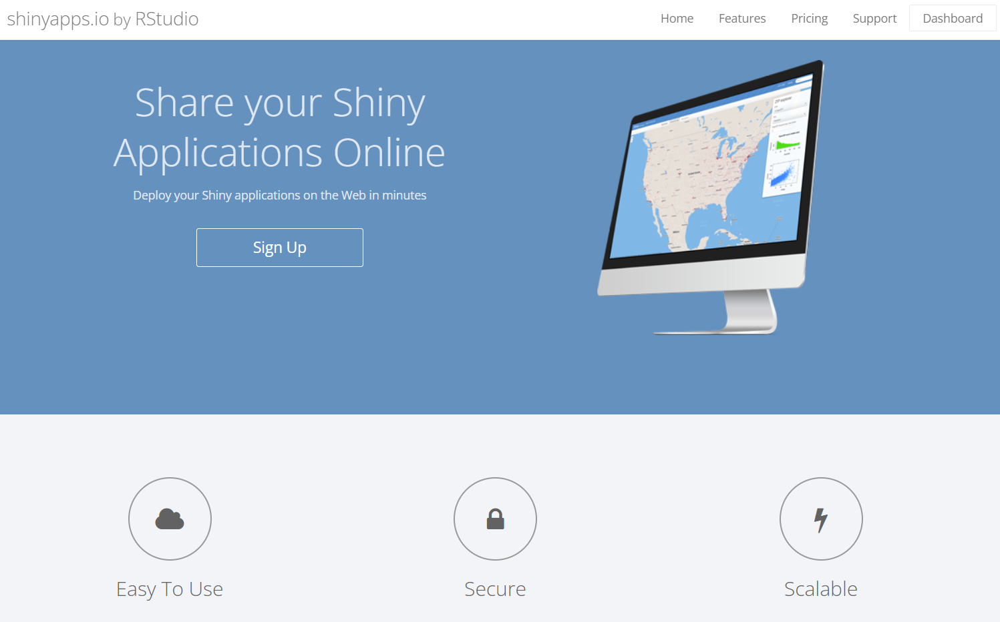
Once you create your account and see your dashboard, you can navigate to your “tokens” by selecting your name in the top right corner and choosing “tokens” from the dropdown menu.
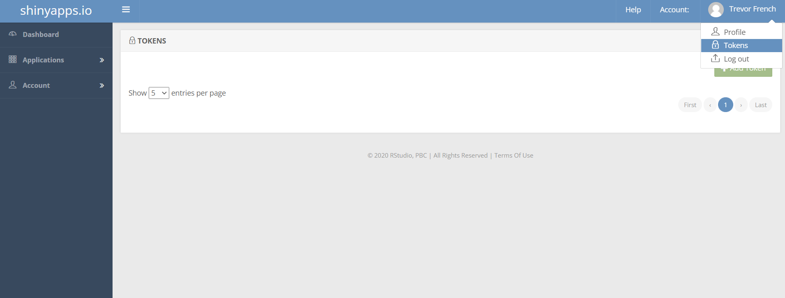
Choose the green “Add Token” button to create a new token.
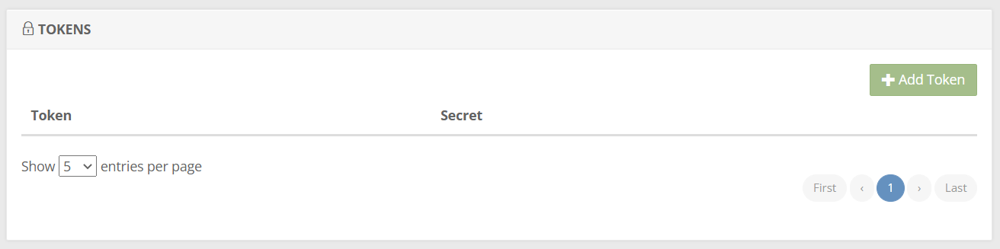
Now that your token has been generated, select the blue “Show” button to view it.
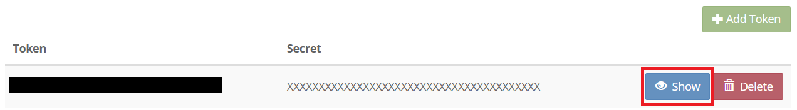
You should now have a window that resembles the following image. Select the “Show secret” button and then copy the code to your clipboard for use later.
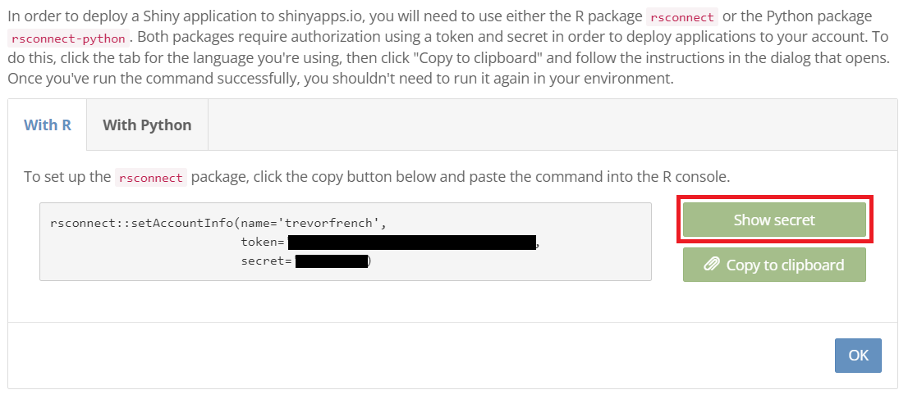
20.3.2 Configuring Account
The next thing we’ll need to do is to link RStudio to your ShinyApps.io account. You can do this by navigating back to RStudio and choosing the dropdown menu next to the publish button. From here, select the “Manage Accounts” option.
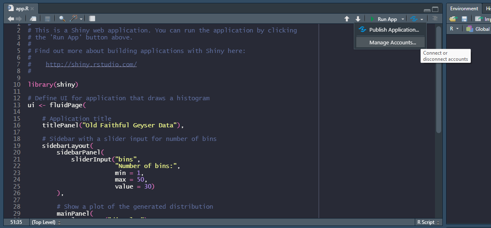
You’ll then get a window the resembles the following image. Choose the “Connect” button to continue.
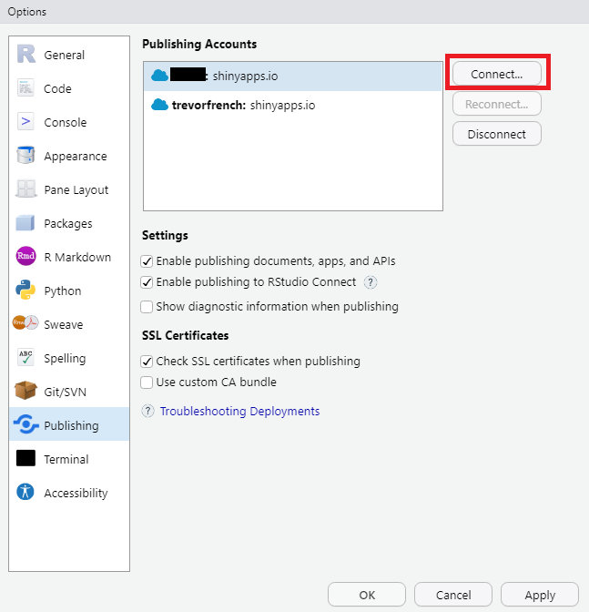
Next, you’ll see the following options. Choose “ShinyApps.io” to continue.
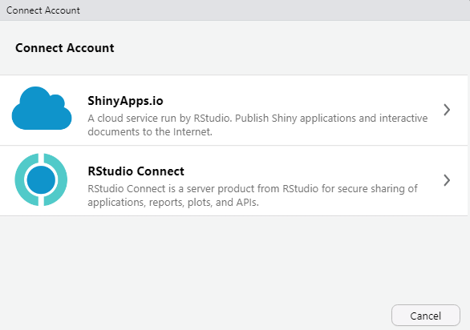
Now you’ll have the oppportunity to paste your token from you ShinyApps.io account. After you do so, press the “Connect Account” button.
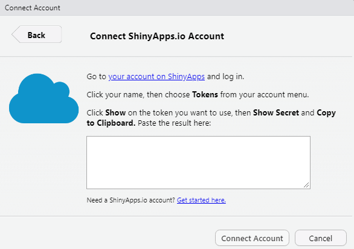
Now that RStudio is linked to your ShinyApps.io account, you can press the publish button. You’ll then get a window which allows you to name your app before publishing. Once you are satisfied with the name you choose, select “Publish”.
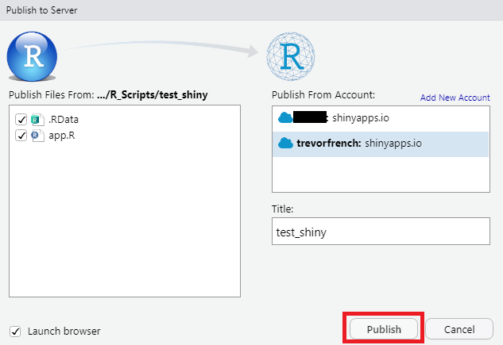
After a few moments, your browser should launch displaying your newly created Shiny App!
20.4 Resources
- Shiny Home Page: https://shiny.rstudio.com/
- Shiny UI Editor: https://rstudio.github.io/shinyuieditor/